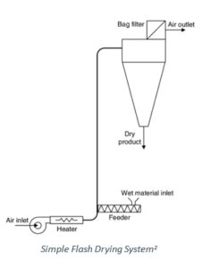
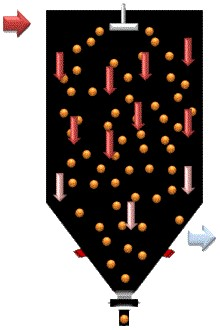
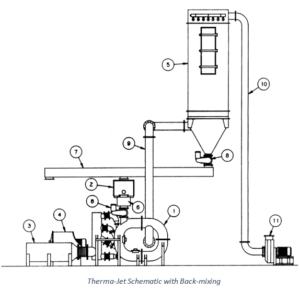
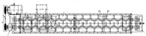

Drying Liquid Feeds
Pneumatic conveyor dryers or flash dryers are an effective method of drying surface or unbound moisture from particulate solids. They consist of a duct carrying gas at high velocity. Flash dryers operate effectively on throughput rates varying from a few kilograms per hour up to tons per hour and higher, and they require little real estate relative to throughput.1
The wet product can be fed to the dryer by various methods: screw feeders, venturi sections, high-speed grinders, and dispersion mills. Selecting the correct feeder to properly disperse the solids in the gas is critical for efficient drying. Selection of the proper feeding equipment can also allow feeding of liquid products1

Typically, pumpable, liquid slurry feeds are dried in spray dryers. In a spray dryer, the liquid feed is dispersed into droplets by a nozzle or atomizer wheel. Relative to spray dryers, flash dryers have smaller footprints and take up less space, which makes them more desirable where space is limited.
One method to dry slurry feeds in a flash dryer is the use of special atomizing nozzles to disperse the feed into droplets in the dryer. This has been used by Fluid Energy Processing, but its utility is limited because most materials tend to stick to the walls and foul the dryer.
A second method to dry liquid feeds is to back mix already dried powder to form a thicker feed with the fresh liquid feed. This blended material is more like a filtered wet cake and can be fed to the flash dryer by more standard methods, such as a screw feeder and rotary valve. In this article, we will review how to dry liquid feeds using back mixing with the dried product.

Flash Dryer Slurry Feed with Back Mixing
Below is a schematic of a back-mixed, flash dryer process:
- 1. ThermaJet
- 2. Dry Material Feeder
- 3. Air Heater
- 4. Process Air Blower
- 5. Product Collector
- 6. Back mixer
- 7. Screw Conveyor
- 8. Rotary Airlocks
- 9. Product Exit Pipe
- 10. Air Exit Pipe
- 11. Exhaust Air Blower

The liquid, slurry feed is transferred via a slurry pump (not shown) to the Back mixer (6). Dried powder from the Product Collector (5) is conveyed to the Material Feeder (2) and then the Back mixer (6) where the slurry is blended with the recycled dried powder to form a wetcake consistency material. The blended material is fed into the Therma-Jet flash dryer (1) through a Rotary Airlock Valve (8). The material is then dried in the Therma-Jet with a high-velocity circulating flow of gas in a similar manner to a fresh wetcake feed. Below is a drawing of a typical blending mixer for the slurry and powder.

Typical Mixer for Blending Slurry and Powder
One example of this type of system was used in the drying of Alumina Slurry. A brief description of this case study can be found here.
A second example involving sewage sludge is outlined below.
Sewage Sludge
Back mixed sewage sludge is continuously introduced into a Therma-Jet dryer through a rotary feed valve. Although the inlet temperature to the dryer may be as high as 1100F (593C), the maximum product temperature of the sludge is approximately 200F (93C).
High inlet temperature and velocity destroy the bacteria in the sludge, producing an organic fertilizer. Over 99% of the dried material is collected in primary cyclones and then transferred to storage hoppers for bagging.
A typical installation evaporates 250 tons water per day (10-11 tn/hr), yielding 80 tons of dried sludge which was initially at a solids level of ~24%.
Many other liquid materials have been dried with this type of process. Please contact Fluid Energy Processing and Equipment if you are looking to dry a liquid material in a pneumatic (flash) dryer or you have other questions about drying of particulate solids. Contact information can be found here.
References
1. R.H. Perry and D.W. Green, Chemical Engineering Handbook, 8th Ed., 2007, p. 12-98.
2. Irene Borde and Avi Levy, 16-Pneumatic and Flash Drying, Handbook of Industrial Drying, Editor Arun S. Mujumdar, CRC Press, 2006.
3. https://en.wikipedia.org/wiki/Spray_nozzle
4. https://en.wikipedia.org/wiki/Spray_drying